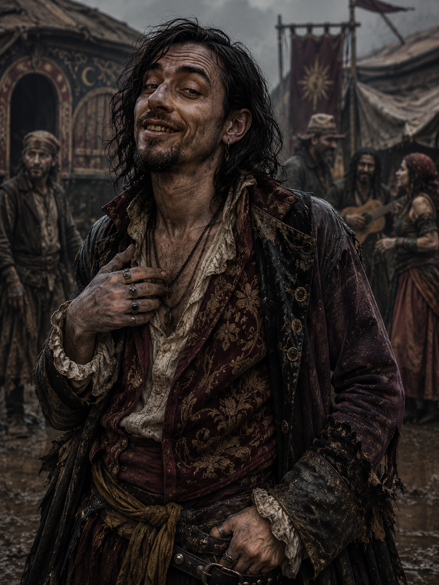
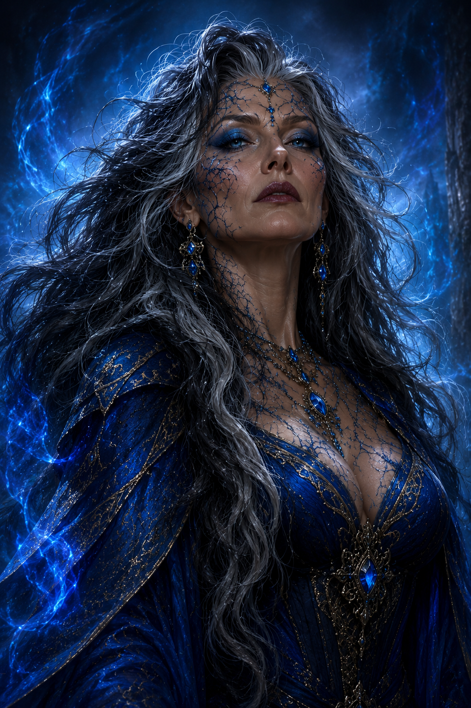
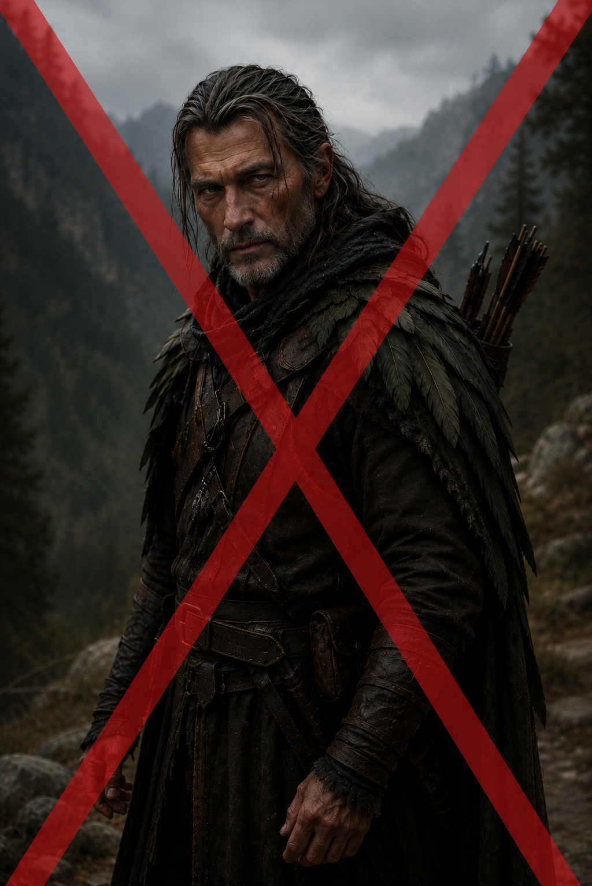

Notable NPCs of Characters' Histories

Lord Blance Vramor
Merchant Lord
Lord Blance Vramor was the sort of man whose wealth entered a room before he did. One of the more influential grain merchants operating beneath the shadow of Lyrabar, Vramor wrapped himself in layers of expensive velvet, jeweled rings, and perfumes strong enough to smother the scent of the docks where his fortune had been made. Age had softened him nowhere except around the waist; his pale, fleshy face sagged beneath carefully groomed facial hair, while his small eyes constantly shifted with the nervous suspicion of a man convinced everyone around him wanted a piece of what he owned. Though technically a lord through purchased titles and a couple carefully arranged marriages, old noble families rarely considered him one of their own. Vramor compensated for this with displays of excess and cruelty, surrounding himself with hired guards, flatterers, and accountants while demanding absolute obedience from anyone beneath him. He was known throughout the reaches of Impiltur as a merchant who never wasted a tragedy if profit could be wrung from it.
What made Vramor truly dangerous was not rage or ambition, but indifference. To him, hunger was merely leverage, desperation a tool as useful as coin or steel. During the failed harvests that crippled the countryside outside Lyrabar, Vramor hoarded grain stores behind guarded warehouses while entire villages faced near starvation, driving prices ever higher as suffering deepened. He delighted in making examples of those who defied him, believing fear was the only language poor folk truly understood. When he uncovered Ellawain Vikvander’s schemes to smuggle and steal food for her starving town, he chose not to punish the young elf directly. Instead, he burned Andrisa’s bakery to the ground in full view of the community, ensuring that everyone understood the cost of crossing him. Even then, witnesses claimed Vramor watched the fire with detached amusement rather than fury, as though human misery were little more than a tedious necessity of business. The masses needed to learn.

Bellodar Draust
Knight-errant of Selûne
Sir Bellodar Draust cut an unusual figure among the knights and temple guardians of Lyrabar. Though broad-shouldered and standing over six feet tall, he carried himself with the easy posture of a traveler rather than the rigid bearing of a courtly noble. His weathered features, dark beard streaked with early silver, and battered moon-etched armor spoke of years spent on muddy roads and forgotten shrines instead of tourneys and feasts. Bellodar favored practicality over pageantry; his cloak was often patched, his shield scarred from real battles, and his sword worn from constant use. Despite his rough appearance, he possessed a calm, steady voice that carried surprising warmth, particularly toward outcasts, pilgrims, and those whom society overlooked. Among the clergy of Selûne, he was regarded as unconventional—too independent for some, too compassionate for others—but few doubted either his courage or his devotion to the Moonmaiden.
Bellodar’s greatest strength was not his skill at arms, though he was an accomplished knight-errant, but his ability to recognize pain and fury in others without condemning them for it. Where many in the temple saw Ikari as a dangerous embarrassment, Bellodar saw a frightened young man struggling beneath burdens no child should bear. He possessed a patient wisdom earned through long years wandering the roads of Impiltur, mediating disputes, hunting creatures of darkness, and sleeping beneath the open sky rather than within noble estates. During his travels with Ikari, Bellodar became equal parts mentor, guardian, and grounding influence, teaching discipline not through harsh punishment but through quiet example. Though never famed in royal courts or celebrated in song, Sir Bellodar Draust earned deep respect among common folk and fellow wanderers alike—a knight whose honor was measured not by glory, but by the lives he steadied before they fell into darkness.

Qint the Lucky
Minstrel Caravaneer
Qint the Lucky was the sort of man who smiled too easily and stared too long, a wiry, sharp-featured opportunist wrapped in faded finery and false charm. He drifted through the nomadic caravan communities of Impiltur like a fox among chickens, always laughing, always gambling, always boasting about fortunes just beyond reach. Long dark hair hung greasy around his narrow face, and his thin mustache framed a grin filled with yellowed teeth and insincere warmth. Qint dressed above his station in embroidered coats, dangling rings, and colorful scarves meant to disguise the grime beneath them, though the smell of cheap perfume and stale wine clung stubbornly to him. Beneath his theatrical friendliness lurked a deeply unsettling fixation on bloodlines and legacy, particularly his obsession with women he might have, and children they might conceive for him as prized possessions. He treated affection like a transaction and viewed relationships entirely through the lens of ownership and desire. His lust to possess Stiora Autumnbloom convinced her to flee to a better life. Though physically unimposing, Qint possessed the unnerving confidence of a man who had survived by manipulation his entire life, using flattery, lies, skulduggery and calculated cowardice to avoid consequences while preying upon the vulnerable whenever opportunity allowed.
Vulfric the Bold
Minstrel Caravaneer
Vulfric the Bold was a mountain of a man whose presence alone could quiet an entire caravan camp. Broad as an ox and thick with scarred muscle earned from years of brawling, hauling wagons, and breaking bones for coin, he carried himself with the swagger of someone who believed fear was as valuable as strength. His shaved scalp, tangled black beard, and heavy brow gave him an almost beast-like appearance, made worse by the perpetual sneer twisting across his face. Vulfric favored sleeveless leathers stained with mud, sweat, and old blood, displaying tattooed arms thick as tree limbs and iron bracers battered from countless fights. Among the wandering entertainers and traders of the roads, he served as both enforcer and intimidator, collecting debts, silencing dissent, and reminding weaker folk of their place through threats or sudden violence. His brutish advances on Stiora Autumnbloom convinced her to flee to a better life. Though not mindless, Vulfric possessed a volatile temper that could turn brutal without warning, particularly when pride or authority were challenged. Many within the caravan feared him openly, while others tolerated him simply because having Vulfric nearby often discouraged even worse dangers from testing the camp.

Ultheera Windmere
Sorceress and King's Former Companion
Ultheera Windmere was once counted among the famed companions of King Alric during the years before he ascended the throne of Impiltur. Even then she was impossible to ignore—a striking woman with storm-gray hair streaked in silver, brilliant blue eyes, and an air of arcane power that seemed to linger about her like distant lightning. Gifted with sorcery from an early age, Ultheera became known for wielding raw magical energies with a precision that rivaled trained wizards. Though age touched her features lightly, she retained a beauty that turned heads wherever she traveled, tempered by a commanding presence that reminded all who met her that she had survived dangers that would have slain lesser adventurers many times over. After Alric's coronation, she remained one of his most trusted allies and advisors, dividing her time between service to the Crown and teaching promising students at the Tower of the Wind in Lyrabar.
When the devastating earthquake of 1502 DR scarred the countryside, especially near West-Over-Farthing, Ultheera became convinced that the disaster concealed a deeper mystery. Reports of an impossible chasm, lingering tremors, and strange magical disturbances drew her attention immediately. Believing the phenomenon to be more than a natural catastrophe, she departed from Lyrabar accompanied by her most promising protégé, (Name to be Determined). Officially, their mission was to investigate the magical anomalies reported near the newly formed rift. Unofficially, Ultheera suspected they might have uncovered traces of something ancient buried beneath Impiltur itself.

Andrisa Fairfield
Baker and Mentor
Andrisa Fairfield was the sort of woman people trusted instinctively, though few could have explained exactly why. She lived in a modest bakery on the edge of a struggling town outside Lyrabar, where the smell of fresh bread drifted through the streets long before sunrise each morning. Neither particularly tall nor imposing, Andrisa possessed a sturdy warmth shaped by years of hard labor and quiet grief. Chestnut-brown hair streaked early with silver was usually tied back beneath a flour-dusted kerchief, and her hands—broad-palmed, scarred lightly by ovens and knives—always seemed busy kneading dough, mending torn aprons, or placing food into the hands of people who clearly could not afford it. Her face carried the softness of someone who smiled often but mourned deeply, the lingering sorrow of losing both husband and son etched gently into the corners of her eyes rather than hardening her spirit. Though practical by necessity, Andrisa believed fiercely in small kindnesses: warm meals, clean blankets, honest work, and the idea that people could still choose decency even when the world gave them every reason not to. It was that belief that led her to offer a starving young elf not punishment, but bread and a place beside the hearth.
To many in the town, Andrisa Fairfield became something more than a baker over the years. She was the woman who quietly extended credit when harvests were poor, who kept ovens burning during brutal winters simply so neighbors could gather somewhere warm, and who spoke of the old Green Faith not as distant religion but as a living reminder that all things deserved care, balance, and belonging. She carried herself with calm resilience, never pretending the world was fair yet refusing to let cruelty define her response to it. Even as starvation spread through the countryside and merchants in Lyrabar hoarded grain behind guarded walls, Andrisa continued to divide what little she had among desperate families, thinning her own stores long before admitting fear for herself. Those who knew her best understood that her kindness was not naïveté, but stubborn courage—the conscious choice to remain gentle in a world growing harsher by the season. When Lord Vramor ordered her bakery burned as punishment for Ellawain Vikvander’s thefts, the destruction shattered more than a building, it broke Andrissa's spirit, and soon her life. It extinguished one of the last warm lights in a dying town. Yet even after her death, Andrisa’s memory endured like the scent of bread from an old oven: comforting, impossible to fully forget, and powerful enough to shape the course of another life long after the fire had turned everything else to ash.

Narmus Sting
Ranger and King's Former Companion
Narmus Sting was a name spoken with quiet respect along the roads and wild borders of Lyrabar. He is held in high esteem by the royal court due to his friendship with, and former companionship with the King, Alric, yet rarely does he venture into the civilized world. Age had worn him into something lean and weathered rather than frail, his narrow frame wrapped in practical traveling leathers faded by decades beneath sun and rain. A mantle of mottled gray-green feathers hung from his shoulders in place of a noble cloak, and his sharp, hawk-like features were framed by long iron-colored hair usually tied back with strips of worn leather. His eyes were perhaps his most striking feature—pale, observant, and unnervingly calm, as though he measured every person and every horizon for danger without consciously thinking about it. Once a ranger sworn to serve the crown of Impiltur during the years before the king's reign and for a time after his coronoation, Narmus eventually abandoned the politics of court for a quieter life wandering the forests, cliffs, and lonely roads of the Easting Reach. Even in retirement, however, he carried himself with the alert patience of a man who never truly stopped being a hunter.
Though taciturn and often difficult to know personally, Narmus possessed a deep compassion buried beneath layers of caution and dry wit. He had little patience for arrogance, but endless patience for those willing to learn, which was why he took in the orphaned Delon Striet when most others would have ignored him. Narmus believed survival was not merely a matter of strength, but of awareness—understanding the rhythm of the wilderness, the motives of men, and the silence between sounds. Under his guidance, lessons were taught through experience rather than lectures: nights spent tracking wolves through snow, days navigating forestland without leaving footprints, and long stretches of quiet observation where Delon was expected to notice what others overlooked. Despite his hardened demeanor, Narmus carried a profound sense of responsibility for those under his care, a trait that ultimately defined his end. Narmus and Delon had been investigating the rumbles in the lands north of West-Over-Farthing. When the earth itself broke apart during the catastrophe, he did not hesitate to sacrifice himself to save his student, vanishing into the shattered depths with the same grim resolve that had guided his entire life. Among those few who knew him well, Narmus Sting is remembered not as a legendary hero, but as something rarer: a good man who never stopped watching over others, even at the cost of himself.